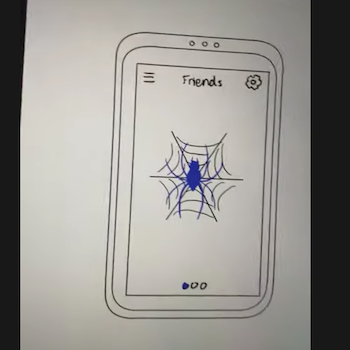

Problem Statement: Webb App

People need a better way to connect in large groups (i.e. college) and the ability to share social media and personal information.
Affinity Diagram: Social Media

We brainstormed our social media application and how to protect users privacy, how to trasfer info, and its overall design.
Persona: 4 Personas for Webb App

Our target audience consists of personas constistently engaging with others.
Storyboards: Webb App

Here is a series of narrative situations our personas would turn towards the Webb in their everyday lives and how it solves a problem.
Sketches: Webb App

Here is the overall design for the social media app, Webb. These are rough sketches but impliment the overall design.
Prototype: Webb App
Here is a more indepth look into how our Webb App works and looks, including it's overall functionality.